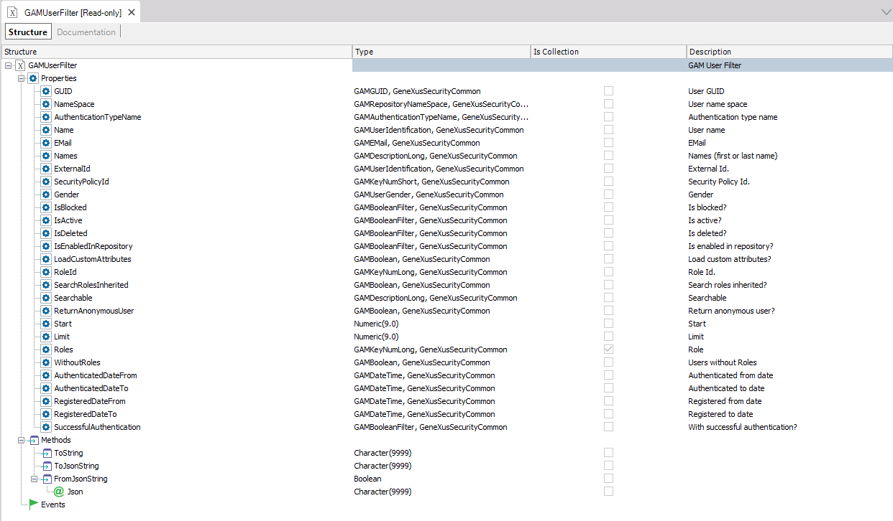

Given a set of GAM Roles, you can get all the users which have those roles, by using GetUsersOrderBy method of GAMRepository object which corresponds to the GAM API. The GetUsersOrderBy method receives a parameter based on GAMUserFilter data type where you can specify the collection of roles (or just one role) which will be used to filter the GAM users returned.  Example of useDefine a variable &GAMUserFilter based on GAMUserFilter data type. Add the roles to the Roles property of GAMUserFilter variable. &GAMUserFilter.Roles.Add(&ID)//&ID is GAMKeyNumLong data type, and corresponds to the Id of the Role. &GAMUserFilter.Roles.Add(&ID2) &GAMUserFilter.SearchRolesInherited = TRUE // If you want to filter users who have this role inherited from another role. For &GAMUser in GAMRepository.GetUsersOrderBy(&GAMUserFilter, GAMUserListOrder.UserName_Asc, &Errors) //&Erros is collection of GAMError &UserNAme = &GAMuser.Name endfor Note that you can also filter the users by just one role using the following code: &GAMUserFilter.RoleId = &FilRol &Users= GAMRepository.GetUsersOrderBy(&GAMUserFilter, GAMUserListOrder.None, &Errors) Or get the users which have no roles: &GAMUserFilter.WithoutRoles = true &Users= GAMRepository.GetUsersOrderBy(&GAMUserFilter, GAMUserListOrder.None, &Errors) Additionally, you can combine the search filters and get
Take a look at the GAMExampleWWUsers GAM Web Backoffice object, which shows an example of how to use this API. See also
|
| Backlinks |
| Get GAM User Roles |